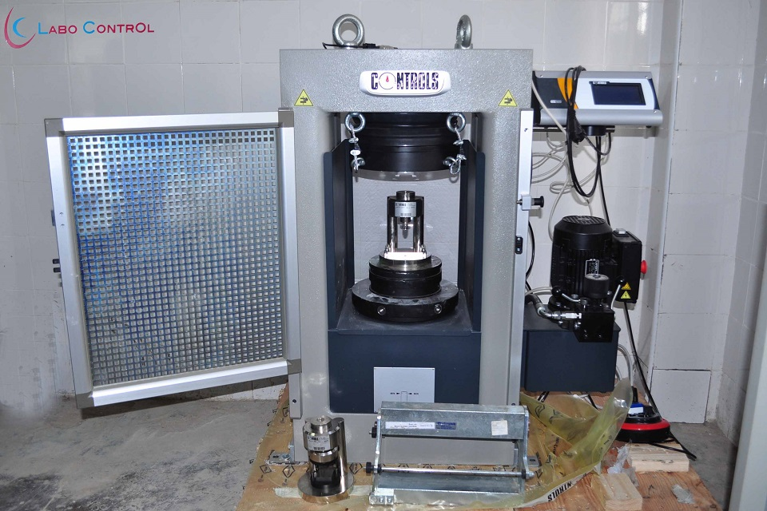

/01 · 2025Tour Anfa Place — sondages profonds
120 sondages carottés jusqu'à −45m pour dimensionner les fondations profondes de la nouvelle tour de bureaux d'Anfa Place. Détection d'une nappe et adaptation du plan de fondation.
Demander une étude similaire →